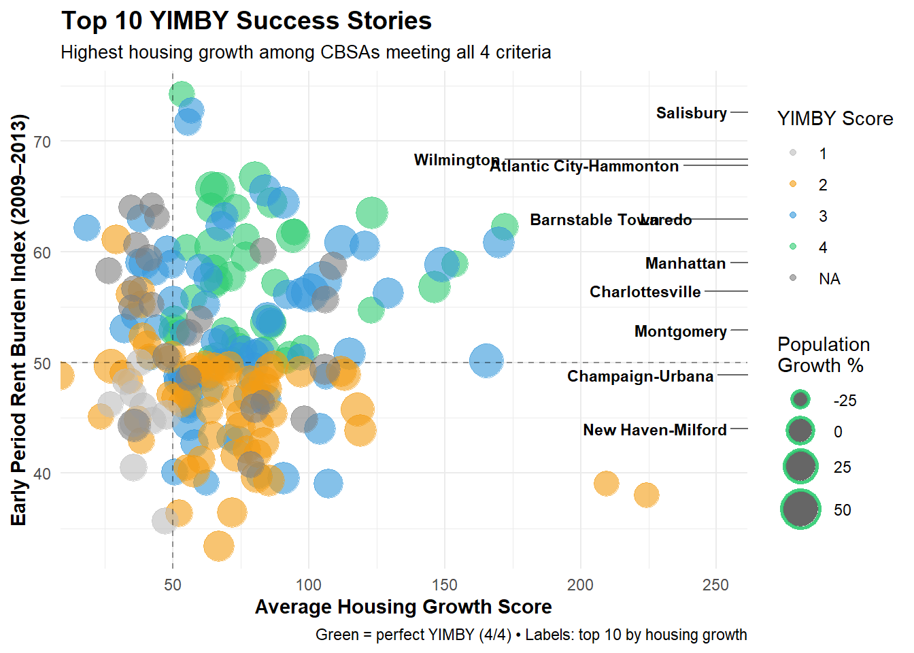

Mini Project 2: Making Backyards Affordable for All
Author
Hyacinthe Sarr
Introduction
Housing affordability is a critical issue affecting millions of people across the United States. IN this project we will analyze various factors influencing housing affordability, including household income, rent prices, housing supply, and employment wages across different metropolitan areas (CBSAs) over time. WE will use data from the American Community Survey (ACS), Building Permits Survey, and Bureau of Labor Statistics (BLS), to construct indices to measure rent burden and housing stock growth. The insights derived from this analysis will help inform policy decisions and strategies to make housing more affordable for all.
Data Acquisition
The following code will download all the necessary datasets for this project.
Extra Credit Opportunity #01: Relationship Diagram
The diagram below summarizes the structure of the datasets used in this project and the relationships among them.
Each dataset in this project represents a distinct source of information that is related to housing affordability, and the diagram above shows the connections among them based on shared keys:
ACS Tables — INCOME, RENT, POPULATION, and HOUSEHOLDS:
These datasets share the geographic identifier GEOID and the variable year.
These common keys allow us to align indicators such as median household income, monthly rent, population size, and number of households for each metropolitan area and each year.
PERMITS (Building Permits Survey):
Uses the CBSA code to identify the same metropolitan areas.
Here though the CBSA and GEOID are not identical, they represent equivalent regional boundaries and can be cross-referenced to connect new housing construction data with the ACS demographic measures.
WAGES (Bureau of Labor Statistics):
Uses the FIPS code to identify regions and includes variables for total employment, total wages, and average annual wage by industry (INDUSTRY).
Each INDUSTRY code link has a detailed description in the look up table INDUSTRY_CODES.
INDUSTRY_CODES (Lookup Table):
Provides hierarchical industry classification labels that map the numeric codes in the WAGES dataset to descriptive names.
Put together, all these relationships show how multiple data sources with different identifiers (GEOID, CBSA, FIPS) and time references (year) can be joined together.
We have enough to study how income, rent, housing supply, and wage dynamics interact across U.S. metropolitan areas over time.
Multi-Table Questions
1.Which CBSA (by name) permitted the largest number of new housing units in the decade from 2010 to 2019 (inclusive)?
The CBSA that permitted the largest number of new housing units in the decade from 2010 to 2019 (inclusive) is Houston-Sugar Land-Baytown, TX Metro Area, which permitted 482,075 new housing units.
2.In what year did Albuquerque, NM (CBSA Number 10740) permit the most new housing units?
Abuquerque, NM (CBSA Number 10740) issued the most new housing units in the year of 2021, for a total of 4021.
3.Which state (not CBSA) had the highest average individual income in 2015? To answer this question, you will need to first compute the total income per CBSA by multiplying the average household income by the number of households, and then sum total income and total population across all CBSAs in a state. With these numbers, you can answer this question.
The state with the highest average individual income in 2015 was DC, with an average individual income of $93,294.00.
4.Data scientists and business analysts are recorded under NAICS code 5182. What is the last year in which the NYC CBSA had the most data scientists in the country? In recent, the San Francisco CBSA has had the most data scientists.
Show code
library(dplyr)library(DT)library(stringr)format_titles <-function(df){colnames(df) <-str_replace_all(colnames(df), "_", " ") |>str_to_title()return(df)}# Filter WAGES data for data scientists (NAICS 5182) firstwages_filtered <- WAGES |>filter(INDUSTRY ==5182) |>mutate(std_cbsa =paste0(FIPS, "0"))# Filter POPULATION data and prepare for joinpopulation_filtered <- POPULATION |>mutate(std_cbsa =paste0("C", GEOID))# Join the datasets on std_cbsa and yeardata_scientists <- wages_filtered |>inner_join( population_filtered |>select(std_cbsa, NAME, year),by =c("std_cbsa"="std_cbsa", "YEAR"="year") )# Group by year and CBSA to find which had the most data scientistsds_by_year <- data_scientists |>group_by(YEAR, NAME) |>summarise(total_employment =sum(EMPLOYMENT, na.rm =TRUE), .groups ="drop") |>group_by(YEAR) |>slice_max(total_employment, n =1) |>ungroup() |>arrange(desc(YEAR))# Find the last year NYC had the most data scientistslast_nyc_year <- ds_by_year |>filter(grepl("New York", NAME, ignore.case =TRUE)) |>pull(YEAR) |>max()# Filter to show only NYC area rowsnyc_only <- ds_by_year |>filter(grepl("New York", NAME, ignore.case =TRUE)) |>format_titles()# Store the formatted column namesformatted_names <-names(nyc_only)datatable( nyc_only,colnames = formatted_names, # Explicitly use formatted namesoptions =list(searching =FALSE,info =FALSE,rownames =FALSE)) |>formatRound(3) # Use column index instead of name
The last year in which the NYC CBSA had the most data scientists in the country was 2015.
5. What fraction of total wages in the NYC CBSA was earned by people employed in the finance and insurance industries (NAICS code 52)? In what year did this fraction peak?
Show code
# Step 1: Filter WAGES data before joiningwages_filtered <- WAGES |>mutate(std_cbsa =paste0(FIPS, "0"))# Step 2: Filter POPULATION data and prepare for joinpopulation_filtered <- POPULATION |>mutate(std_cbsa =paste0("C", GEOID)) |>filter(grepl("New York", NAME, ignore.case =TRUE))# Step 3: Join to get NYC data onlynyc_wages <- wages_filtered |>inner_join( population_filtered |>select(std_cbsa, NAME, year),by =c("std_cbsa"="std_cbsa", "YEAR"="year") )# Step 4: Calculate total wages by year for NYCtotal_wages_by_year <- nyc_wages |>group_by(YEAR) |>summarise(total_wages =sum(TOTAL_WAGES, na.rm =TRUE), .groups ="drop")# Step 5: Calculate finance and insurance (NAICS 52) wages by year for NYCfinance_wages_by_year <- nyc_wages |>filter(INDUSTRY ==52) |>group_by(YEAR) |>summarise(finance_wages =sum(TOTAL_WAGES, na.rm =TRUE), .groups ="drop")# Step 6: Join and calculate the fractionfinance_fraction <- total_wages_by_year |>inner_join(finance_wages_by_year, by ="YEAR") |>mutate(fraction = finance_wages / total_wages) |>arrange(YEAR)# Find the year with the peak fractionpeak_year <- finance_fraction |>slice_max(fraction, n =1)
The fraction of total wages in the NYC CBSA earned by people employed in the finance and insurance industries The fraction of total wages in the NYC CBSA earned by people employed in the finance and insurance industries peaked in the year 2014, with a fraction of 4.6%.
Initial Visualizations
1. The relationship between monthly rent and average household income per CBSA in 2009
Show code
library(ggpmisc)library(ggplot2)library(dplyr)income_rent_2009 <- INCOME |>filter(year ==2009) |>inner_join(RENT |>filter(year ==2009), by =c("GEOID", "year"))ggplot(income_rent_2009, aes(x = household_income, y = monthly_rent)) +geom_point(color ="#3498db", alpha =0.6, size =2) +stat_poly_line(se =FALSE, color ="#e74c3c", linewidth =1) +stat_poly_eq(aes(label =paste(after_stat(eq.label), after_stat(rr.label), sep ="~~~"))) +scale_x_continuous(labels = scales::dollar_format()) +scale_y_continuous(labels = scales::dollar_format()) +labs(title ="Monthly Rent vs. Average Household Income (2009)",subtitle ="Each point represents a Core-Based Statistical Area (CBSA)",x ="Average Household Income",y ="Monthly Rent",caption ="Source: American Community Survey (ACS)" ) +theme_minimal() +theme(plot.title =element_text(size =14, face ="bold", hjust =0.5),plot.subtitle =element_text(size =11, hjust =0.5),axis.title =element_text(size =11, face ="bold"),axis.text =element_text(size =10) )
There is a clear positive correlation between average household income and monthly rent in 2009. As household income increases, monthly rent tends to increase as well. The fitted regression line indicates that higher-income households generally pay higher rents, suggesting that rent prices are influenced by the income levels of residents in different CBSAs. The coefficient of determination (R²) of approximately 0.58 indicates that about 58% of the variation in monthly rent can be explained by average household income, translating to a correlation coefficient of r = 0.76, which suggests a strong positive relationship.
2. The relationship between total employment and total employment in the health care and social services sector (NAICS 62) across different CBSAs. Design your visualization so that it is possible to see the evolution of this relationship over time
Show code
library(dplyr)library(ggplot2)library(DT)# Step 1: Filter WAGES data for healthcare (NAICS 62) before joininghealthcare_wages <- WAGES |>filter(INDUSTRY ==62) |>mutate(std_cbsa =paste0(FIPS, "0")) |>group_by(std_cbsa, YEAR) |>summarise(healthcare_employment =sum(EMPLOYMENT, na.rm =TRUE), .groups ="drop")# Step 2: Calculate total employment by CBSA and yeartotal_employment <- WAGES |>mutate(std_cbsa =paste0(FIPS, "0")) |>group_by(std_cbsa, YEAR) |>summarise(total_employment =sum(EMPLOYMENT, na.rm =TRUE), .groups ="drop")# Step 3: Join healthcare and total employment dataemployment_data <- total_employment |>inner_join(healthcare_wages, by =c("std_cbsa", "YEAR")) |>inner_join( POPULATION |>mutate(std_cbsa =paste0("C", GEOID)) |>select(std_cbsa, NAME, year),by =c("std_cbsa"="std_cbsa", "YEAR"="year") ) |>mutate(healthcare_share = healthcare_employment / total_employment)# Clean dataemployment_data_clean <- employment_data |>filter( total_employment >0, healthcare_employment >0,is.finite(total_employment),is.finite(healthcare_employment) )# Create visualizationggplot(employment_data_clean, aes(x = total_employment, y = healthcare_employment, color =as.factor(YEAR))) +geom_point(alpha =0.6, size =2) +geom_smooth(method ="lm", formula = y ~ x, se =FALSE, alpha =0.3, linewidth =0.8) +facet_wrap(~YEAR, ncol =4) +scale_x_log10(breaks = scales::trans_breaks("log10", function(x) 10^x, n =5),labels = scales::label_number(scale_cut = scales::cut_short_scale()) ) +scale_y_log10(breaks = scales::trans_breaks("log10", function(x) 10^x, n =5),labels = scales::label_number(scale_cut = scales::cut_short_scale()) ) +labs(title ="Total Employment vs Healthcare Employment by CBSA",subtitle ="Evolution over time (2009-2023); each panel represents one year",x ="Total Employment (log scale)",y ="Healthcare & Social Services Employment (log scale)",caption ="Source: Bureau of Labor Statistics Quarterly Census of Employment and Wages" ) +theme_minimal() +theme(plot.title =element_text(size =14, face ="bold", hjust =0.5),plot.subtitle =element_text(size =11, hjust =0.5),axis.title =element_text(size =11, face ="bold"),axis.text =element_text(size =9),axis.text.x =element_text(angle =45, hjust =1),strip.text =element_text(size =10, face ="bold"),legend.position ="none" )
The faceted visualization reveals a consistent positive relationship between total employment and healthcare employment across all years. The log-log scale allows us to observe this relationship across CBSAs of vastly different sizes. The linear relationship on the log scale suggests that healthcare employment scales proportionally with total employment across metropolitan areas. The consistency of this pattern across years indicates that healthcare represents a relatively stable share of total employment, regardless of overall metro size or economic conditions.
3. The evolution of average household size over time. Use different lines to represent different CBSAs
The plot below tracks average household size from 2009 to 2023 across more than 380 metropolitan areas.
Most metros have remained stable, though the largest cities tend to show slightly smaller households over time.
Show code
library(dplyr)library(ggplot2)library(RColorBrewer)# Calculate average household size over time for each CBSAhousehold_size_data <- POPULATION |>inner_join(HOUSEHOLDS, by =c("GEOID", "NAME", "year")) |>mutate(avg_household_size = population / households,geoid_numeric =as.numeric(GEOID))# Create spaghetti plotggplot(household_size_data, aes(x = year, y = avg_household_size, group = GEOID, color = geoid_numeric)) +geom_line(alpha =0.6, linewidth =0.5) +scale_color_viridis_c(option ="viridis") +scale_y_continuous(breaks =seq(2, 3.5, 0.25),limits =c(2, 3.5) ) +scale_x_continuous(breaks =seq(2009, 2023, 2) ) +labs(title ="Evolution of Average Household Size Over Time (2009-2023)",subtitle ="Each line represents a different CBSA",x ="Year",y ="Average Household Size (persons per household)",caption ="Source: American Community Survey (ACS)\nNote: 2020 data unavailable due to COVID-19" ) +theme_minimal() +theme(plot.title =element_text(size =14, face ="bold", hjust =0.5),plot.subtitle =element_text(size =11, hjust =0.5),plot.caption =element_text(size =9, hjust =0, color ="gray40"),axis.title =element_text(size =11, face ="bold"),axis.text =element_text(size =10),panel.grid.minor =element_line(linetype ="dotted", linewidth =0.3),legend.position ="none" )
Building Indices of Housing Affordability and Housing Stock Growth
We will begin by constructing an initial metric of rent affordability by combining our INCOME, RENT, and POPULATION tables from above. Using an appropriate join, we merge these three into a single table which can be used to perform the following task.
Rent Burden
Housing affordability is often measured by the percentage of household income spent on rent. When families spend too much on housing, they have less money for other essentials like food, healthcare, education, and savings. The U.S. Department of Housing and Urban Development (HUD) considers households “cost-burdened” if they spend more than 30% of their income on housing, and “severely cost-burdened” if they spend more than 50%.
To understand which metropolitan areas face the most severe affordability challenges, we constructed a Rent Burden Index that standardizes rent-to-income ratios across all CBSAs and over time. This index allows us to identify cities where the residents face the highest housing cost pressures and track whether affordability is improving or worsening. By setting the national average at 50, we can easily see which cities are above or below average in terms of rent burden—higher scores indicate greater affordability challenges, while lower scores suggest more affordable housing markets.
Show code
# Load required librarieslibrary(dplyr)library(DT)# Step 1: Join INCOME and RENT tablesrent_burden_raw <- INCOME |>inner_join( RENT,by =c("GEOID"="GEOID", "year"="year"),suffix =c("_income", "_rent") ) |>select(GEOID, NAME_income, year, household_income, monthly_rent) |>rename(NAME = NAME_income)# Step 2: Calculate basic rent-to-income ratio# Annualize monthly rent and compute ratiorent_burden_raw <- rent_burden_raw |>mutate(annual_rent = monthly_rent *12,raw_rent_to_income = annual_rent / household_income )# Step 3: Calculate national baseline (long-term average across all years and CBSAs)national_baseline <- rent_burden_raw |>summarise(mean_rent_to_income =mean(raw_rent_to_income, na.rm =TRUE)) |>pull(mean_rent_to_income)cat("National baseline rent-to-income ratio:", round(national_baseline, 4), "\n\n")
The housing growth metrics reveal a complex relationship between housing supply and demographic change across American metropolitan areas. The rate-based metric, which compares housing permits to five-year population growth, captures an important distinction: cities experiencing population decline such as New York, Los Angeles, and Chicago show exceptionally high permit-to-growth ratios, indicating substantial housing construction despite shrinking populations. This pattern reflects two competing dynamics: either these large metros are actively building to attract new residents and reverse decline, or they are replacing aging housing stock in mature markets.
Conversely, smaller growing metros show more moderate ratios, suggesting their housing supply is more closely calibrated to their population increases. When combined with the instantaneous metric (which measures permits relative to current population size), this composite score identifies which cities are meeting housing demand, which are those building enough homes for both existing residents and new population growth.
Cities scoring highest on this composite measure are successfully balancing affordability pressures with supply expansion, while those scoring lowest face either restrictive zoning that suppresses building or declining demand that reduces construction incentives. This framework reveals that housing adequacy cannot be measured by raw permit counts alone; it requires understanding how permit activity responds to the specific demographic and economic context of each metropolitan area.
Visualization
The visualizations below examine the relationship between two housing affordability metrics we developed: the Rent Burden Index and the Housing Growth Score. These plots are designed to identify metropolitan areas that exemplify “YIMBY” (Yes In My Backyard) success: cities that addressed high housing costs by building more homes, improving affordability while at the same time maintaining or growing their populations.
We define YIMBY success using four criteria:
High early rent burden (index > 50 in 2009–2013) — indicates an affordability challenge at baseline.
Decreasing rent burden — affordability improved over the study period.
Population growth — the metro remained attractive and grew.
Above-average housing growth (score > 50) — the metro built enough housing.
Metropolitan areas meeting all four criteria demonstrate that building more housing can successfully address affordability challenges without causing population decline. The following visualizations highlight these success stories and show how different cities compare using these metrics.
top_yimby <- yimby_criteria |>filter(is_yimby) |>arrange(desc(avg_housing_growth)) |>slice_head(n=10)viz1_top <-ggplot(yimby_criteria, aes(avg_housing_growth, early_rent_burden)) +geom_point(aes(size = population_growth_pct, color =factor(yimby_score)), alpha =0.6) +geom_point(data = top_yimby, aes(size = population_growth_pct), color ="#2ecc71",alpha =0.9, stroke =1.5, shape =21) + ggrepel::geom_text_repel(data = top_yimby,aes(label = stringr::str_extract(NAME, "^[^,]+")),size =3, fontface ="bold", box.padding =0.8,point.padding =0.5, segment.color ="gray40",min.segment.length =0, max.overlaps =15, force =2) +geom_hline(yintercept =50, linetype ="dashed", color ="black", alpha =0.4) +geom_vline(xintercept =50, linetype ="dashed", color ="black", alpha =0.4) +scale_color_manual(values =c("0"="#d3d3d3","1"="#bdbdbd","2"="#f39c12","3"="#3498db","4"="#2ecc71"),name ="YIMBY Score") +scale_size_continuous(range =c(1, 10), name ="Population\nGrowth %") +coord_cartesian(xlim =c(20, 250)) +labs(title ="Top 10 YIMBY Success Stories",subtitle ="Highest housing growth among CBSAs meeting all 4 criteria",x ="Average Housing Growth Score",y ="Early Period Rent Burden Index (2009–2013)",caption ="Green = perfect YIMBY (4/4) • Labels: top 10 by housing growth" ) +theme_minimal() +theme(plot.title =element_text(size =14, face ="bold"),plot.subtitle =element_text(size =10),axis.title =element_text(size =11, face ="bold"),legend.position ="right" )print(viz1_top)

The first chart above spotlights the best-performing metros among the “perfect YIMBY” group—those that combined strong housing growth with improved affordability. In the plot below, we broaden the view to see how all metros perform across rent-burden change and population growth, with marker size indicating housing growth.
Show code
# ---- Viz 2: 4-criteria map (change vs growth) ----viz2 <-ggplot(yimby_criteria, aes(rent_burden_change, population_growth_pct)) +geom_point(aes(size = avg_housing_growth, color =factor(yimby_score)), alpha =0.7) +geom_hline(yintercept =0, linetype ="dashed", color ="black", alpha =0.5) +geom_vline(xintercept =0, linetype ="dashed", color ="black", alpha =0.5) +annotate("rect", xmin =-Inf, xmax =0, ymin =0, ymax =Inf, alpha =0.08, fill ="green") +annotate("text", x =-8, y =55,label ="IDEAL: Decreasing rent burden + Growing population",fontface ="bold", color ="darkgreen", size =3.5) +scale_color_manual(values =c("0"="#d3d3d3","1"="#bdbdbd","2"="#f39c12","3"="#3498db","4"="#2ecc71"),name ="YIMBY Score") +scale_size_continuous(range =c(2, 12), name ="Housing\nGrowth Score") +labs(title ="YIMBY Success: Four Criteria Combined",subtitle ="Green shading shows ideal quadrant (rent burden ↓ + population ↑)",x ="Rent Burden Change (negative = improvement)",y ="Population Growth %",caption ="Color = YIMBY score • Size = housing growth • Green zone = best outcomes" ) +theme_minimal() +theme(plot.title =element_text(size =14, face ="bold"),plot.subtitle =element_text(size =10),axis.title =element_text(size =11, face ="bold"),legend.position ="right" )print(viz2)
Policy Brief
üèõ Policy Brief: Building America Forward ‚Äî A Federal YIMBY Incentive Program
Note
Purpose
This brief advocates for a Federal YIMBY Incentive Program that rewards local governments for expanding housing supply and improving affordability.
The goal is to make housing attainable for working families while sustaining job growth in construction, health care, and other essential industries.
1. Congressional Sponsors
Primary Sponsor — Wilmington, NC Metro Area
Wilmington exemplifies YIMBY success. Since 2009 it has permitted new housing at one of the fastest rates relative to existing households.
Median rents have stayed moderate, showing how flexible zoning and proactive permitting can restrain costs even following their population and job growth.
Co-Sponsor — New York–Newark–Jersey City, NY-NJ-PA Metro Area
The New York metro area faces some of the nation’s highest rent burdens and tightest housing supply.
A federal incentive program would help such regions modernize zoning practices and accelerate building approvals by tying funding to measurable improvements in housing growth and affordability.
2. Key Beneficiary Occupations
Occupation
Why This Group Should Support the Bill
Construction and Skilled Trades
Federal incentives for housing expansion directly boost demand for construction jobs. Wilmington’s data show that every 1 % increase in permitted units corresponds to measurable growth in construction employment and wages.
Health Care and Social Assistance (NAICS 62)
High rent burdens disproportionately affect nurses, aides, and social-service staff. In metros such as New York, median rents consume over 40 % of household income. Lower rents would free disposable income and stabilize this essential workforce.
3. Metrics for Targeting Funding
Housing Growth Rate (“YIMBY Index”)
[ = ] Measures how aggressively a metro adds new housing relative to its current stock.
Rent Burden
[ = ] Estimates the share of income spent on rent — lower values mean greater affordability.
Both indicators are easily derived from American Community Survey (ACS) enabling transparent, evidence-based targeting of federal grants.
4. Why This Matters
For Voters: Affordable housing allows families to save, spend, and stay in their communities ultimately.
For Industries: Stable housing costs sustain labor supply in key sectors like construction and healthcare.
For Congress: A bipartisan opportunity — pro-growth, pro-worker, and fiscally efficient.
Conclusion
A Federal YIMBY Incentive Program would channel federal support toward cities that embrace responsible growth.
By pairing a YIMBY leader (Wilmington, NC) with a NIMBY reformer (NY-NJ) and aligning the interests of construction and health-care workers, Congress can advance an agenda that lowers rents, expands opportunities and keep America building.
Extra Credit Opportunity #02: Highlighting Important Units in a Spaghetti Plot
For this extra credit, I use the gghighlight package to highlight the NYC and Los Angeles CBSAs in the visualization of household size over time and low-light the other lines.
Show code
library(dplyr)library(ggplot2)library(gghighlight)# --- Data prephousehold_size_data <- POPULATION |>inner_join(HOUSEHOLDS, by =c("GEOID", "NAME", "year")) |>mutate(avg_household_size = population / households)highlight_geoids <-c("35620", # New York Metro"31080", # Los Angeles–Long Beach–Anaheim"31100"# Los Angeles–Long Beach–Santa Ana (older definition))household_size_data <- household_size_data |>mutate(city_label =case_when( GEOID =="35620"~"New York Metro Area", GEOID %in%c("31080", "31100") ~"Los Angeles Metro Area",TRUE~ NAME ) )# --- Plotggplot(household_size_data, aes(x = year, y = avg_household_size, group = GEOID)) +geom_line(aes(color = city_label), alpha =0.6, linewidth =0.8) +gghighlight( GEOID %in% highlight_geoids,use_direct_label =TRUE,label_key = city_label,label_params =list(size =4, fontface ="bold"),unhighlighted_params =list(colour =alpha("gray80", 0.3),linewidth =0.4 ) ) +scale_color_manual(values =c("New York Metro Area"="#e74c3c","Los Angeles Metro Area"="#3498db" ),guide ="none" ) +scale_y_continuous(breaks =seq(2, 3.5, 0.25),limits =c(2, 3.5) ) +scale_x_continuous(breaks =seq(2009, 2023, 2) ) +labs(title ="Evolution of Average Household Size Over Time (2009–2023)",subtitle ="New York (red) and Los Angeles (blue) highlighted among 380+ metro areas",x ="Year",y ="Average Household Size (persons per household)",caption =paste("Source: American Community Survey (ACS)","\nNote: 2020 data unavailable due to COVID-19","\nMetropolitan area definitions updated by Census Bureau over time",sep ="\n" ) ) +theme_minimal() +theme(plot.title =element_text(size =14, face ="bold", hjust =0.5),plot.subtitle =element_text(size =11, hjust =0.5),plot.caption =element_text(size =9, hjust =0, color ="gray40"),axis.title =element_text(size =11, face ="bold"),axis.text =element_text(size =10),panel.grid.minor =element_line(linetype ="dotted", linewidth =0.3) )
Note
Why two Los Angeles lines?
The Census Bureau and BLS use slightly different metro definitions. “Los Angeles–Long Beach–Anaheim” is the full CSA; “Los Angeles–Long Beach–Santa Ana” is a metropolitan division. Both are shown to preserve data integrity.
Conclusion
The analysis conducted for this project shows how population growth, housing construction, and affordability interact across metropolitan areas in the United States. Using data from the U.S. Census Bureau (ACS) and the Bureau of Labor Statistics (QCEW), this project identified wide variation in local housing outcomes: some regions continue to expand their housing supply in step with demand, while others like NYC as an example, show signs of stagnation and cost pressure.
By linking population trends to permit activity, the Housing Growth Metric revealed which CBSAs are keeping pace with demographic change. Areas like Wilmington, NC and other fast-growing metros demonstrate how a balanced way of new permits issuance can help stabilize rents and sustain affordability, while more constrained metros such as those in the New York–New Jersey area illustrate how limited housing production can amplify rent burden despite their economic strength.
From a policy standpoint, these findings support the argument for a federal YIMBY initiative that rewards cities not only for expanding housing access but also for creating communities where affordability and opportunity can coexist. Encouraging local governments to align zoning flexibility, infrastructure investment, and long-term planning could lead to a more balanced regional housing markets.
In sum, the evidence points to a clear takeaway: sustainable housing growth and affordability depend on supply responsiveness. Cities that embrace inclusive, forward-looking planning will be better positioned to attract residents, especially the millennial as an example, and deliver on the broader promise of making every backyard affordable for all.